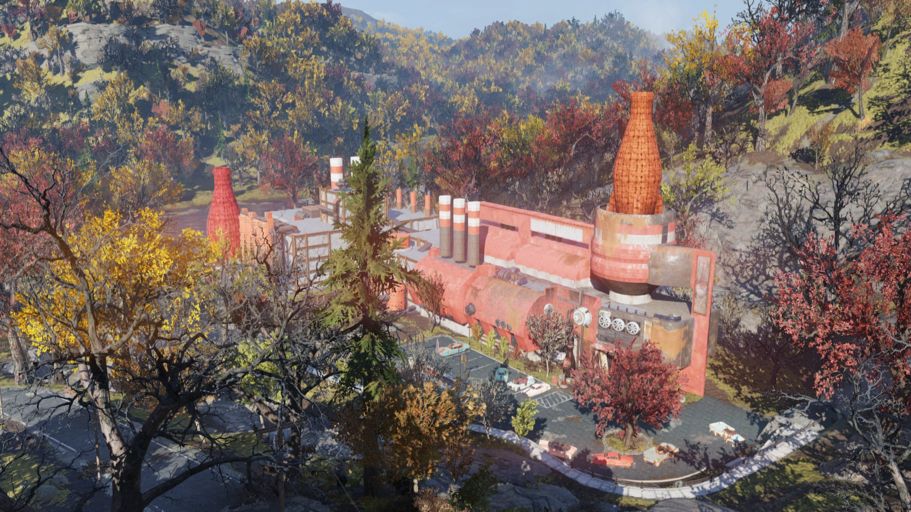
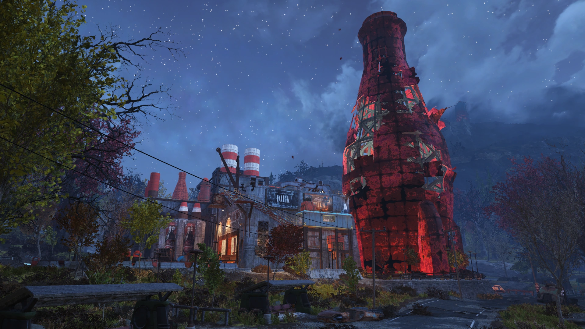
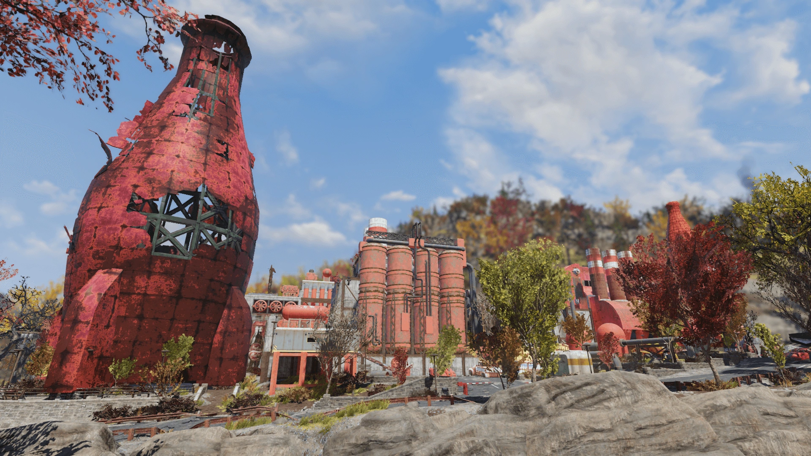
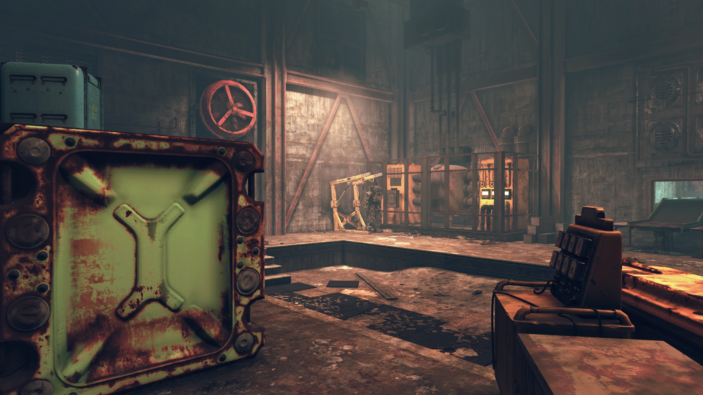
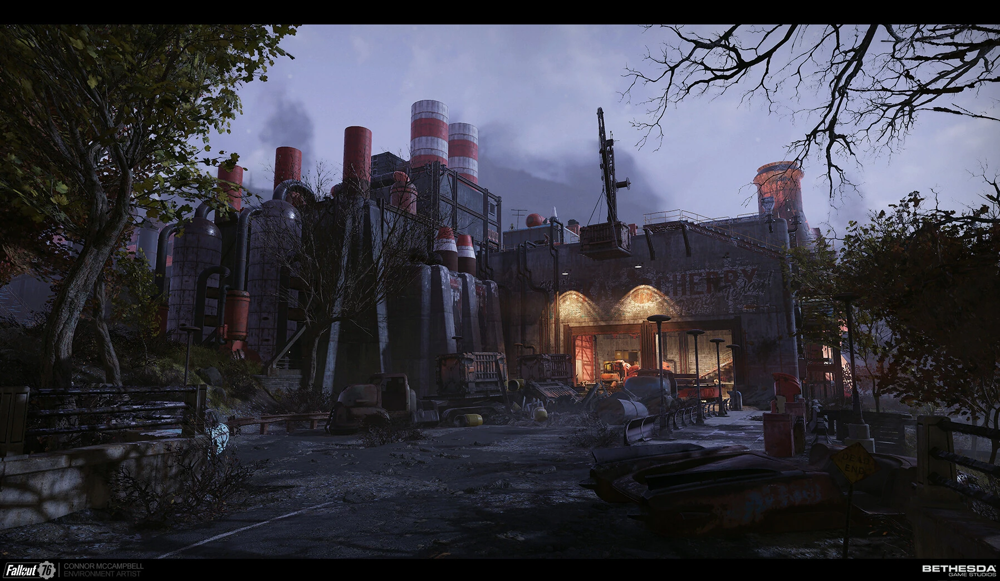

Kanawha Nuka-Cola Plant
カナー・ヌカコーラ工場
Kanawha Nuka-Cola plantは、Fallout 76のアパラチアの森林地帯にあるロケーションです。
背景
大戦前、カナー・ヌカコーラ工場はアパラチアの人々が新製品をどう感じるかをテストするための地域マーケティング＆研究開発施設でした。
コードネーム「ホエールシャーク」「オルカ」「アルバトロス」をはじめ、ヌカ・コーラ量子、ヌカ・コーラ・ブラック、ヌカ・コーラ・オレンジ、ヌカ・コーラ・クォーツなどの新製品が開発・テストされていました。
また、後にヌカ・コーラ・クランベリーとなる飲料の開発にも携わっていました。
2103年までに、この工場はVault 76の監督官がスコーチ病への広域ワクチン接種手段（ヌカ・コーラ・ワクチネイテッド）を製造する計画において、重要な拠点となりました。
関連メモ・ホロテープ
NUKA-COLA ベータテスト フィードバックフォーム
サンプル名：
1～10のスケールで、10が最も最適として、
テストしたサンプルの体験を評価してください：
強度（INTENSITY）：
口当たり（MOUTHFEEL）：
酸味（ACIDITY）：
香り（AROMA）：
フレーバープロファイル（FLAVOR PROFILE）：
甘さ（SUGARINESS）：
金属味（METALNESS）：
後味（AFTERTASTE）：
中毒性（CRAVABILITY）：
総合味（OVERALL TASTE）：
総合体験（OVERALL EXPERIENCE）：
追加コメント：
NUKA-COLA ベータテスト フィードバックフォーム
サンプル名：NCB02-A6A1（※ヌカ・コーラ・ブラック）
強度：6 / 口当たり：2 / 酸味：5 / 香り：7 / フレーバープロファイル：7
甘さ：2 / 金属味：9 / 後味：4 / 中毒性：4
総合味：3 / 総合体験：5
追加コメント：この飲み物を飲んだ後に歯が痒くなるのは正常ですか？ 爪楊枝かドリルか何かありませんか？
NUKA-COLA ベータテスト フィードバックフォーム
サンプル名：NCQ17-JH1A（※ヌカ・コーラ量子）
強度：10 / 口当たり：10 / 酸味：10 / 香り：10 / フレーバープロファイル：10
甘さ：10 / 金属味：10 / 後味：10 / 中毒性：10
総合味：10 / 総合体験：10
追加コメント：私は全能の神の顔を見つめ、その無限の栄光に浸った。私はすべての生きとし生けるものと一体感を共有している。これは世界と共有されなければならない。
To: マーケティングチーム全正社員
From: R. マーカス・テイラー
Re: 休暇
これは私がワトガで家族と2週間の休暇を取ることのリマインダーです。マーケティングおよびR&D関連の案件については、パット・ウォーカーまでご連絡ください。
よろしくお願いします、
マーカス
アレクシスへ──このことを許してくれると嬉しい。方法論やR&Dについて長年意見が合わなかったのは分かっているけど、マーケティングがヌカ・コーラの世界では邪悪な力だということは、いつも意見が一致していたわよね。
罪のない人々を実験台にするのは許せない。だからヒ素と水銀とストロンチウム90とその他全部を持って、サットンの自宅に帰ることにしたの。
分かってくれることを願って
── クララ
マーカス・テイラー：最新の市場調査によると、健康的なスナック需要は全市場セクターで8%上昇しており、今後数年間にわたり需要を牽引すると予測されています。
最初の実験では、セロリ風味のスパークリング飲料の復活を検討します。1860年代を起源とする飲料で、アウトサイダーのステータスを求める層に認知度が組み込まれています。
人工フレーバー、パッケージデザイン、マーケティングのバランスを取り、健康効果があると人々を納得させられると考えています。
法務部門と連携して主張できる範囲の限界を確認中ですが、現在のところ「新世代のためのクラシック消化飲料」あるいは「アメリカ最高の時代からのグリーントニックウォーター」を検討しています。
NUKA-COLA ベータテスト フィードバックフォーム
サンプル名：NCX13-GP01
強度：3.74 / 口当たり：5.2 / 酸味：0.4 / 香り：2.2 / フレーバープロファイル：4.275
甘さ：9.1 / 金属味：7.66 / 後味：1.9 / 中毒性：0.17
総合味：3 / 総合体験：3.7645
追加コメント：
ソーダアーティストの皆さんへ──この私、世界一のヌカ・コーラ愛好家ルイスです！（おそらくブラッドバートン氏本人を除いて。）
配合NCX13-GP01については、すでに完成された元の配合を改変する試みとして、信じられないほど凡庸な出来と言わざるを得ません。やり直してください。
友よ、
私の忠告は、あのもの（X-01パワーアーマー・ヌカコーラ量子塗装設計図）を隠すことだ。マーケティング部はすべてを見ている、特に自分たちの予算がどこに消えたかを。そして予算関連の大炎上が来る…それは完全に君の責任になる！ そして手を貸そうとしている私の責任にもなる。
隠せる場所を知っている。目の届かない場所に、忘れられるように。経費明細書の項目を調整しておくから、誰にもバレない。お互いのために、リスクを取るな。
鍵の一つはタナグラ・タウンに行くときに持っていく。子供たちに会いに行くときだ。もう一つの鍵は君のために残しておいた。あの時あのものを置いた、あの場所にある。
レイアウト

入口
工場には2つの入口があります。どちらの周辺にも低レベルのスコーチやフェラル・グールが徘徊しています。
正面入口から入るとレセプションエリアに、出荷入口から入ると工場フロアに出ます。
正面入口・ロビー
正面入口を通ると小さなレセプションエリアがあり、小さな階段を上がって大きな出入口を抜けると、多数の研究室とテイスティングエリアがある大きなオープンロビーに出ます。
右側にはテイスティングエリアに隣接する研究室と、工場フロアへの通路トンネルがあります。左側は倉庫エリアです。
メインロビーには約5体のスコーチがスポーンします。
左右に階段があり研究室とキャットウォークに上がれます。ロビーの奥には工場階への出入口があり、より汚れたコンクリートのエリアが広がります。
出荷エリア・工場フロア
工場の反対側にある出荷エリアは2体のプロテクトロンが警備しています。プロテクトロンは近くのスコーチを撃ちますが、プレイヤーにも敵対します。
プロテクトロンを越えると制御ポッド内のドアから工場フロアに入れます。
工場フロアにはコンベアベルトと産業機械が並んでいますが、ヌカ・コーラ自体は工場のどこにも見当たりません。
工場フロアの奥には、従業員休憩室、ロビーエリア、さらなる工場フロア、そして2基の核融合発電機がある小部屋へと続くユーティリティトンネルネットワークがあります。
主なアイテム
メモ・ホロテープ
- Blank feedback form（空白フィードバックフォーム） ── 2階テイスティングエリアのブースのカウンター
- NCB02-A6A1 feedback form ── 2階テイスティングエリア
- NCQ17-JH1A feedback form ── 2階テイスティングエリア
- Nuka-Cola marketing memo（マーケティングメモ） ── 2階Flavor Profile Ops室
- Clara's note to Alexis（クララからアレクシスへのメモ） ── 2階Snackability R&D研究室の施錠パントリー
- Product brainstorming 1（ホロテープ） ── 2階Flavor Profile Ops室のテーブル
- NCX13-GP01 feedback form [Wild Appalachia] ── 2階テイスティングエリア
- My advice [Wild Appalachia] ── 屋上ハッチからの最初の部屋
その他
- パワーアーマー（T-シリーズ装備付きシャーシ） ── 地下のパワーアーマーステーション
- フュージョン・コア ×3
- TNTドームキー3 ── Snackability R&Dのロッカー内（ヌカ・コーラロッカーキーが必要）
- Paired keycard 01 [Wild Appalachia] ── バスルームの「故障中」個室
- Vault-Tecボブルヘッド（3箇所）
- 雑誌（3箇所）
- 大量のアルミニウム、ガラス、核物質
舞台裏
工場内部に、ヌカ・コーラのボトルをロケットに見立てた地球を周回するブロンズ像があります。
これはInterplay Entertainmentのロゴへのオマージュです。InterplayはオリジナルのFalloutとFallout 2のパブリッシャーでした。
ギャラリー




ヌカ・コーラ関連のロケーションはFalloutシリーズの定番ですが、このカナー工場は「地域マーケティング＆R&D施設」という設定が独特。
コードネーム「ホエールシャーク」「オルカ」「アルバトロス」──海洋生物の名前を冠した未知のヌカ・コーラ新製品。実際に製品化されたのか、それともプロトタイプのまま大戦を迎えたのか。
ホロテープ「Product brainstorming 1」のセロリ味スパークリング飲料の話は最高に面白い。「1860年代起源」「アウトサイダーのステータスを求める層」「健康効果があると納得させる」──戦前のマーケティングの狂気が詰まっている。
「My advice」のメモも秀逸。X-01パワーアーマーの量子塗装設計図を予算から隠すために経費明細を改竄し、鍵を2つに分けて隠す。「あの時あのものを置いた、あの場所にある」は映画『ハッカーズ』(1995)のセリフの引用。
そしてInterplayロゴのイースターエッグ。ヌカ・コーラのボトルがロケットになって地球を周る──オリジナルFalloutへの敬意が込められている。
This article was created by translating and editing Kanawha Nuka-Cola plant from Nukapedia: The Fallout Wiki.
Licensed under the Creative Commons Attribution-Share Alike License (CC BY-SA 3.0).
コミュニティ維持のため、寄付を受け付けております。
> COMMENTS